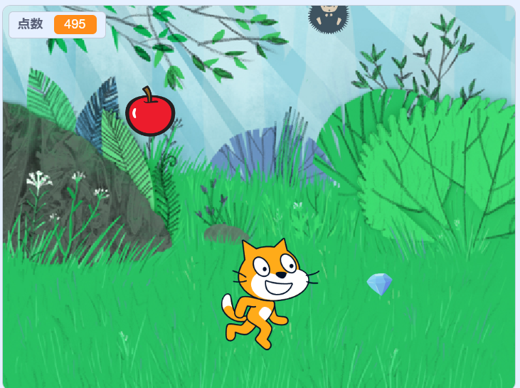

1-2 ゲーム

1.内容
このゲームは落ちてきたものをキャッチし、点数を稼いでいくゲームだ。
落ちてくるものは3種類。
1種類目はリンゴは5点で比較的大きいので拾いやすい。
2種類目は宝石で10点です。しかし、リンゴよりは小さいので取りにくくなっている。
3種類目はハリネズミで、これをとってしまうと-5になってしまう。
これはスクラッチで作っており、操作するキャラは90度と-90度にしか動かないようにし、矢印キーでそれぞれ左右に動くようにした。
この時、キャラの外見を切り替え走っているようにした。また、落ちてきたものはランダムで落ちる座標と速さが決まっており、
キャラに当たるとキャラから落ちてきたものにそれぞれ信号が送られ、ものを透明にしてポイントを変動させます。この透明化は上から
降ってくるときに復活するようにした。
2.感想
この作品をつくるのは簡単で説明してもらいながら、作ったのでできて当然だが、この後、どう面白くするか喉を考えていくことが
難しく、ここがプログラミングの面白いところだと気づけた。